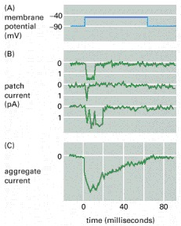

”The function of ion channels is to allow specific inorganic ions to diffuse rapidly down their electrochemical gradients across the lipid bilayer… Nerve cells (neurons), in particular, have made a specialty of using ion channels, and … use a diversity of such channels for receiving, conducting, and transmitting signals… Biology textbooks are full with wrong statements such as Ion channels cannot be coupled to an energy source to perform active transport, so the transport that they mediate is always passive (’downhill’)” [104]. ”The flux of ions through ion channels is passive, requiring no expenditure of metabolic energy by the channels. The direction and eventual equilibrium for this flux are determined not by the channel itself, but rather by the electrostatic and diffusional driving forces across the membrane.”[41], page 107. Not to mention that the last sentence directly contradicts to the previous one. (We note that the ’downhill’ transport requires moving the ions in a viscous fluid against friction, so it requires energy. Due to the finite resources, discussed in section 2.2.2, the moved charge changes its potential energy to kinetic energy plus dissipation. That potential energy (the membrane’s potential) is the source to perform a ’passive’ transport, given that the ion affects the membrane’s field; for details see section 2.8.6. The ’passive transport’ would defy energy conservation.)
The role of ion pumps must be revisited, too. According to biology, the ion channels and ion pumps have different charge transmission mechanism. ”These pumps differ from ion channels in two important details. First, whereas open ion channels have a continuous water-filled pathway through which ions flow unimpeded from one side of the membrane to the other, each time a pump moves an ion, or a group of a few ions, across the membrane, it must undergo a series of conformational changes. As a result, the rate of ion flow through pumps is 100 to 100,000 times slower than through channels. Second, pumps that maintain ion gradients use energy, often in the form of adenosine triphosphate (ATP), to transport ions against their electrical and chemical gradients. Such ion movements are termed active transport.” [41], page 101. The so called ”Na-K pump” is supposed to actively transport (using energy from ATP) sodium ions out of the cell and potassium ions into the cell. However, in the old model no mechanism is provided how the ions gain energy from ATP and how the ions are moved (what are the laws of motion of ions in those ion channels and what a force (see Eq.(2.7) can ”transport ions against their electrical and chemical gradients”). Instead, some magic mechanism by protein conformations is supposed without explaining what is the driving force to do so, how it can deliver the ions in sufficiently short times needed for the operation, ans what is the source of the energy needed to move the huge amounts of molecular masses, needed for implementing .
We want to describe the change of voltage due to limited resources using an idea similar to the predator-prey model. We have charged sheets (represented by ions in the electrolyte) with potential and on the two surfaces of the membrane, plus we consider the corresponding neighboring layers on their side toward the ”bulk” of the segment. We assume that the layers’capacity is constant, so the change of charge is linearly proportional to the change of the voltage.
We consider that a charge transfer happens from the layer with potential to the layer with potential (that is, the same charge is removed and added, respectively) with a high speed (we call it potential-accelerated speed), furthermore, that with a much lower speed (we call it potential-assisted speed) the charge in the neighboring layer increases and decreases, respectively, those voltages are ( and ).
That is, we assume four voltages and the initial conditions
We assume a constant capacity for the layers and that the amount of transferred charge (or voltage) is proportional to the difference of voltages in the respective layers.
Furthermore, we assume that the after-diffusion from and to the layers next to the proximal layers is much lower than the high speed of the charge exchange between the proximal layers, that is
As Fig.2.14 depicts, voltages and quickly approach their balanced values. When they get equal, the driving force cancels. In the meantime, the voltages and tend to approach and , respectively. The diffusional and energy producing processes, depending on the local conditions, change the voltages on the two ends of the channel, creating the illusion that the channel opens and closes. As [59] analyzed, this on/off behavior of currents can be observed for natural and synthetic lipid membranes; with and without caps. In spite of slightly different experimental conditions, amplitude and typical time scale are similar.
By their function, there are resting (located in the wall of the plasma membrane, with low density) and transient (located at the beginning of the axon, with high density) ion channels. It is believed that the task of the resting ion channels is maintaining ion gradients in the resting state and establishing the negative resting membrane potential. Actually, as discussed in section 2.5.3, in the resting state, instead of some magic protein mechanism (ion pumps), the resultant potential (the sum of the electrical and thermodynamic potentials) moves the the ions through the channels in the membrane. The resulting conductance (sumed above the membrane’s surface) of those channels is about 50 times smaller [50, 54] than that of the AIS (summed around the beginning of the axon). In a typical mammalian cell, see Table 3.1, the sum of the electric and thermodynamical potentials are for ions and for ions. The same values for squids are and . Correspondingly, given that both ions have positive charge, the resulting force moves sodium ions out of the cell and potassium ions into the cell. In our ”new understanding” it is clear physics: the resulting force moves the ions in and out, simultanously. The ”ion pumps” are ordinary ion channels, with two-way ion traffic, depending on the local gradients around the two ends of the ion channel. Their operation is the result of the complex interplay of the ion layers (discussed in section 2.7.2) and the local field (see Eq.(2.30)).
The different speeds play a significant role in the correct operation and the cooperation of different neuronal objects, including ion channels in the walls of membranes and axons. We discuss their effect also in section 2.7.2: they affect also the resource-availability of ion charges in the electrolyte segments. Given that the ”transport efficiency of ion channels is times greater than the fastest rate of transport mediated by any known carrier protein” [104], we can consider that speed as ’infinitely fast’ compared to the speeds of neuronal ion currents. Biology observes the effect of speed of ion transport: ”transport efficiency of ion channels is times greater than the fastest rate of transport mediated by any known carrier protein” [104]. It sees that there is an enormous accelerating voltage (a electric field) across the plasma membrane, but does not connect that voltage to the ions’ charge and the high transport speed. The ions in biological electrolytes do not obey laws of electricity.
The above numbers are valid for the resting state. In the resting state (a dynamically balanced state), due to the local charge transfer, the locally potential distribution migh significantly differ from the global potential, so the effective driving force in average, is close to zero; resulting in a very low transport speed, as observed.
For the transient state, the case is different. The membrane potential can be below and above the resting potential, so the resultant force can be either positive or negative, changing the direction of both currents. As Figure 6 in [34] displays, the ratio of and changes sharply during the transient state. Theoretically, they assume that the neuron “pumps 3 ions out of the cell and two potassium ions in”; experimentally, they show in their Fig. 6 that the ratio changes between 0.01 and 7.5. The classical theory cannot explain this behavior and leads to exciting conclusions: ”Furthermore, we analyzed energy properties of each ion channel and found that, under the two circumstances, power synchronization of ion channels and energy utilization ratio have significant differences. This is particularly true of the energy utilization ratio, which can rise to above 100% during subthreshold activity.” [34]
Our model says that both the concentration (due to rush-in) and local membrane potential drastically changes during the transient state. As long as the resultant potential is above , the driving force acting on potassium ions is positive, i.e., the pump will move both ions out of the cell. The potential gradient near the membrane explain also the energy delivery: ATP, by hydrolysis, generates ions which are moved to the ”plates” of the condenser. (as we discuss in section 1.7, in transient state, the ”setpoint” of the control circuit is also changed, and to restore the condenser’s voltage, those ions must be collected.)
The rapid influx of ions causes a sudden increase in the potential on the intracellular side. Conversely, the ions’ removal from the layer on the extracellular side near the membrane ’empties’ the layer (and so: suddenly decreases its potential), and the after-diffusion (despite the large concentration difference) with the low drift speed (even if it is assisted by the repulsion of the fellow ions) takes time. Because of the slow after-diffusion, the transfer stops well before the ion channels get inactivated. See also the operation of clamped axons: removing the surface ion layer enables the membrane to prolong its ’open’ state (again, in statistical sense). Basically, the diffusion speed in those layers (in a statistical sense) and the lack or presence of ions in the proximal layer, defines the ’open’ and ’closed’ states of the channel population. The ion channels have three states, but their population has only two. One can hardly interpret a third state of ion channels without considering the effect of the membrane’s charged layers as we discuss below.
It is hard to separate the operation of the individual channels from the operation of their population in the walls of membranes (layers). When ions pass through the channel, they face two effects on the two sides of the membrane. On the side of departure with high concentration (where they of course have high electric potential), they suddenly ”empty” the thin layer in the immediate vicinity of the membrane (for a detailed discussion see section 2.7.2 about the effect of finite resources). On the side of arrival with low concentration, again, the arrived ions suddenly form a ’filled’ thin layer. The ions in both segments can move only with their corresponding diffusion speed (in the order of ) but in the presence of a voltage gradient they experience each other’s electric repulsion that can speed up their speed to the range . (BTW: this effect can be interpreted as a sudden ion adsorption [77] on the surface of the membrane.) The final effect resembles an electric condenser: for a short time, layers with opposite charges are formed on the two sides of the semipermeable isolator membrane, which are canceled in the frame of issuing an AP. The two layers attract each other, so the ions in the layers can diffuse toward their respective neighboring layers only moderately.
For cardiac AP s, where only a few ion channels participate, ”the slow currents appear to have been caused by repeated openings of one or more channels” [61]. For neuronal AP s, where many ion channels participate, ”the durations of channel opening and closing vary greatly”; furthermore, ”the rate at which current flows through an open channel is practically constant” [104].
The ion channels are either closed or open without a noticeable transition state, but as discussed in [62, 128], for their adequate description three states are needed: they can also be in inactivated state. We can consider the channel operation as ”infinitely fast” compared to the speed of processes in front and behind of the channel: the massive difference in speeds explains why ion channel opening and closing resembles a ’digital operating mode’. The different speeds play a significant role in the correct operation and the cooperation of different neuronal objects, including ion channels in the walls of membranes and axons.
Experimental evidence shows that although ”the durations of channel opening and closing vary greatly, the rate at which current flows through an open channel is practically constant [104]. The presence of two layers on the opposite sides of the membrane actually implements the control square-ware signal on the figure. Those layers also explain why the ion channels (in a statistical sense) behave as digital, despite that the individual ion channels are not digital.

As Fig. 2.15 depicts, an ion channel is open roughly for and the peak amplitude is , so the maximum charge that can be transferred in a single shot is , which assumes ions per shot per channel. (If we assume that the ions pass the ion channel one by one, without pausing, the passage time of an ion is . Given that the electrolyte electrodes contribute a considerable delay, the value might be not accurate.)
The entered ions cannot leave sufficiently quickly the proximity of the channel’s exit, so their potential prevents the rest of ions from entering the membrane: the ion layer closes the channel. Recall that the number of the uncompensated ions is about , the several (typically several hundreds) simultanously working ion channels overcompensate the ion balance: despite the forceful external potential, no more ions can enter the membrane (the ’downhill’ gradient cancels; if we use the approximation that the ions traverse the channel length instantly). In the rest of the shown period, despite that the external voltage (the square wave) is still present, the potential of the stalled ions (the internal voltage) keeps the channel closed: no new rising edge (voltage gradient) arrives. In the figure, the aggregate current enables us to estimate the total number of channels to be . Clearly, the aggregate current shows two effects: the individual ion channels’ contributions, which are measured within the channels, have steep rising and falling edges. As the figure depicts, after no more new openings happen. Following that, the currents flow toward the point where the aggregated current measured: the charge on the membrane quietly discharges. (The reason of the decay is the same as in the case of the AP a slow current flows on the surface; so their time constant is the same, althought the fluctuation due to the arrival time of the contributions of the individual channels is more observable.) Again, the external voltage is stable, the internal voltage decreases, so the aggregate current decreases. The membrane’s conductance does not change. However, the resulting potential that directs the current is the sum of the external and internal potentials. As the charge diffuses toward the bulk region, the internal potential decays, and so does the measurable aggregate current.
Although the individual ion channels open and close ’randomly’, the repulsion force on the two surfaces of the membrane acts as an additional valve; its discussion see in section 2.7.2. As [104] discusses, ’this potential difference … exists across a plasma membrane only about thick, so that the resulting voltage gradient is about ’. In a statistical sense, part of the ion channels can be open after the population members received the ’open’ signal, part of the population can be closed or inactivated, but when the layer enables, the ions in the proximal layer can escape to the other side of the membrane.
It is also known that for their adequate operation, the ion channels need to implement three states: in addition to the ’on’ and ’off’ states, they can also be in an inactivated state [62, 128]. However, the population of the ion channels has only ’on’ and ’off’ states; furthermore, for some reason the population get ”fatigued”: ”the probability, that any individual channel will be in the open state, decreases with time” [104]. It is due to the finite resources, as we quantitatively discuss it in section 2.7.2.
As Fig. 2.15 depicts, it is the gradient (the rising edge), instead of the membrane potential, which starts the individual patch currents (and, of course, the aggregate current). Depending on the environment of the channel’s exit (the fluctuation of the charge density), the channel has an a maximum ’let-in’ time. The representative patch currents show that the channel can definitely and quickly open,
Semipermeable membranes, with ion channels in their walls, separating electrolyte segments with ion concentrations differing by orders of magnitude, play a unique role in neuronal electric operation. It is at least problematic to interpret the operation of the individual channels without understanding their dynamic interaction with the other channels, the electrolyte, and the semipermeable membrane.
We consider the external concentration constant: the extracellular space is infinitely large, and the amount of ions remains by orders of magnitude higher than the internal one. Our assumption is valid for the global static concentration (we call it ’bulk’), but not for the local dynamic one. The voltage-controlled ion channels open when on the lower concentration side, the local voltage exceeds some threshold value.
In the resting state (without a voltage offset around the ion channels), the channels keep balance between the separated segments. However, when an ion channel gets open (meaning that ions from the high-concentration side can pass through it to the low-concentration side), for a short period, the ions change the local concentration and potential of the electrolyte in the proximity of the entrance and exit of the channels, forming two proximal layers. The case drastically changes if an additional potential gradient appears. In that case, (part of) the ion layer, formed on the membrane’s surface due to the charge arriving through the ion channels, is continuously removed by the macroscopic ion current from the immediate proximity of the ion channels. The layer gets saturated later, and the conditions of transferring ions through the channels persist for longer, so they remain open, enabling a continuous ion inflow (a macroscopic current; see the discussion about clamping dynamic operation using AIS).
The ion channels have three states, but their population has only two. Fundamentally, the lack or presence of unbalanced ions in the proximal layers defines the ’open’ and ’closed’ states of the channel population. The individual ion channels open and close in a stochastic way. In a statistical sense, part of the ion channels can be open, and another part can be closed or inactivated. However, only when the layer’s potential enables, can the ions in the proximal layer escape to the other side of the membrane, even if the channel is open. The ion channels have no reason to re-open because of the lack of offset voltage (and that layer). That is, primarily, the presence of the layers on the two sides of the membrane defines the ion inflow, and the individual ion channels can freely (re)open, close, or inactivate until the layer provides a sufficiently large potential offset. This transient state is the key to understanding the dynamic operation of neurons.
There is a strong electric field on the boundary of the segments. As [104] discusses, ’an electrical potential difference about 50–100 mV … exists across a plasma membrane only about thick, so the resulting voltage gradient is about ’. In their ’off’ state, the voltage-controlled ion channels are mechanically closed, so the ions cannot follow that gradient. However, when (due to the collected synaptic charge or the significant slope of the arriving spike [63] or clamping) a voltage offset appears at the ion channel, so it opens. Due to the enormous gradient, ions rush in from the extracellular segment into the intracellular one. This means a high speed, that is, a ’fast’ current, see Eq. (2.28).
However, upon arriving at the other side of the membrane, they experience the electric field disappearing, so the stream of ions stalls. The stalled ions increase the local potential (see section 2.4.6) around the channel’s exit, and the ions will move along the parallel potential gradient toward neighboring channel exits. ’The description just given of an action potential concerns only a small patch of plasma membrane. However, the self-amplifying depolarization of the patch, is sufficient to depolarize neighboring regions of the membrane, which then go through the same cycle. In this way, the action potential spreads as a traveling wave from the initial site of depolarization to involve the entire plasma membrane’ [104]. The depolarization happens in an avalanche-like way [84] over the entire membrane surface. This process creates ion-rich layers in the proximity of the membrane on both sides. At the end of the process, the potential in the layer on the intracellular side temporarily reaches the potential inside the bulk of the extracellular side. The ions in the layer experience two forces: in the direction parallel to the membrane’s surface, the electric repulsion due to the fellow ions in the same layer; furthermore, in the perpendicular direction, the attraction of the ions in the opposite layer.
The first force acts in distributing the potential uniformly over the surface, and in this way (per definitionem), an ion current flows in parallel with the surface. This ion current is slow: the ions are moving in a viscous solution under the effect of a potential gradient (see Eq. (2.28)), if any. In the lack of external potential, it is of type relaxation. The presence of a current drain (such as AIS on the membrane or the axonal arbor on the axon) also means a potential difference, and an exponential discharge function of type describes that current, is a time constant.
The second one acts against diffusion and prevents the ions from leaving the layer. Until that current stops (due to the saturation of the layer), an ion current will flow in the direction perpendicular to the surface. That current is ”fast” only within the ion channel until the driving force disappears, and becomes ”slow” in the electrolyte layer, where the received charge saturates the layer. A current of form can describe the saturation, where is a time constant. Recall that the current’s speed depends on the voltage gradient, so the intensity and the temporal behavior of the currents are different, even between the ”parallel” and ”perpendicular” current directions, given that two different mechanisms control the process, despite that we consider the motion of the same charged particles. As a result of the two processes, a function of type describe the local charge distribution in the function of time. Although the timing constants change as the potential changes, we use the approximation that the layer is thin; furthermore, its concentration and potential have zero gradients in a direction perpendicular to the membrane. However, a steep potential gradient exists between the layer and the rest of the segment.
The ’caps’ on the top of the ion channels act as individual regulators, and the ion channels continuously and randomly open, close, and inactivate. Their statistical population enables a macroscopic ion inflow throughout the surface and the electric repulsion distributes the charge over the surface, tending to make the local potential uniform over the surface. The repulsion and attraction forces on the two surfaces of the membrane around the channel’s exit act as an additional valve on the ion transport: the population of ion channels must cooperate with them, given that the ions move ’downhill’.
This behavior explains why ion currents across the membrane start up with a sharp exponential rise [129] (one of the big mistakes was fitting polynomial lines [13] to those critical regions, comprising both exponential and no-current regions: it hides the sudden change of membrane’s current [129] caused by the state change of the ion channels); why initiating an AP has precise timings (both the charge-up signal and pressing ions through the AIS); why axonal arbors can provide a precise “Begin Computing” signal. Measuring the conductance of ion channels, requires special care. As discussed in section 2.4.8, it is easy to make a systematic error, given that the measurement method can affect the result.
We posit explicitly that our parameters can be directly concluded from the measurable parameters such as membrane surface size, its ion channel density, specific membrane capacitance and absolute resistance of the AIS. Having those parameters of components of the non-living matter, plus the time course of the input currents, we can describe how and why a the living matter shows the behavior we can observe. This exact discussion provides an excellent base for understanding neuronal assemblies’ operation, furthermore revealing details of neuronal information storage and transfer.
This behavior explains why ion currents start up with a sharp exponential rise [129] (fitting polynomial lines [13] to those critical regions was a big mistake: it hides the sudden change caused by the state change (opening) of the ion channels, and that the ’rising edge’ is actually described by an exponential increase); why initiating an AP has precise timings (both the charge-up signal and pressing ions through the AIS); why axonal arbors can pr ovide a precise ‘ComputingBegin’ signal. For the details, see the following subsections. Measuring the conductance of ion channels, requires special care. It is easy to make a systematic error, given that the measurement device can affect the result.
Notice that the charged layers mean that a population of ion channels must cooperate. Although the individual ion channels open and close ’randomly’, the repulsion force on the two surfaces of the membrane acts as an additional valve. In a statistical sense, some ion channels are open after the population members received the ’open’ signal, but when they are open, only the ions in the proximal layer can escape to the other side of the membrane.
”When measuring currents through small membrane segments, the conductance events appear in a quantized steps, i.e. one observes a switching between current-on and currentoff events. In biological membranes one normally assumes that this phenomenon is caused by the opening and closing of ion channel proteins (Fig. 3a). The two conduction states are called open and closed channels. As already described above, these channel proteins play an important role in the Hodgkin-Huxley model of nerve pulse conduction. Interestingly, one finds very similar events in synthetic membranes that are free of proteins (e.g., [10, 11]), in particular if one is close to the melting transition (Fig. 3b). Both current amplitude and the typical opening time scales are practically indistinguishable from those of protein-containing membranes. Obviously, the finding of quantized current events is not a proof for the activity of proteins even though this is what is generally assumed since membranes close to transition display the same characteristics. Whether the events in protein-containing membranes and those in pure lipid membranes have the same origin is yet an open question.” [59]
{kind=link}